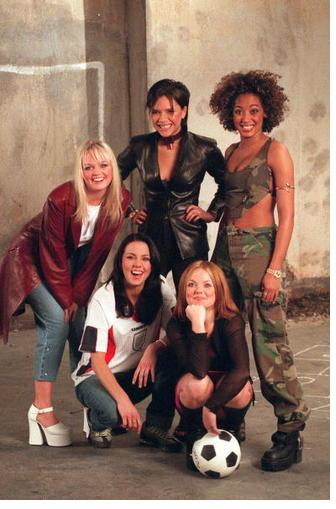
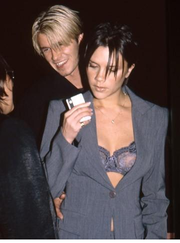

Chương Sáu

Tháng 11, 1996, đêm trước trận Anh – Georgia, David Beckham và Gary Neville nằm khềnh tán gẫu, xem TV trong phòng khách sạn tại Tbilisi. TV chuyển sang chương trình ca nhạc, với video mới của nhóm Spice Girls Say You’ll be There. David dán mắt vào màn hình, như bị thôi miên bởi vũ đạo của Victoria Adams[1], biệt danh Posh Spice, cô nàng tóc ngắn, mặc trang phục đen bó sát. Dĩ nhiên, trước đây, David từng xem Spice Girls (gồm 5 thành viên: Geri, Mel B, Mel C, Emma, và Victoria) biểu diễn. Ai lại chưa từng xem Spice Girls, nhóm nhạc đang làm mưa làm gió trên khắp thế giới, thống trị các bảng xếp hạng âm nhạc toàn cầu? Song không hiểu vì sao, đêm hôm ấy, David có cảm giác vô cùng đặc biệt. Hình ảnh Victoria trong Say You’ll Be There như có một ma lực không thể cưỡng, cuốn lấy hồn anh.
“Posh Spice đẹp quá, mày à”, David quay sang Gary, “Cái gì cũng đẹp, cái gì cũng yêu. Tao phải kiếm cách làm quen mới được.”

Spice Girls (Ảnh: Tvrage)
Thật ra, Victoria luôn ở rất gần David. Cô sinh ở Goff’s Oak, chỉ cách Chingford 15 phút lái xe. Ngày còn nhỏ, hẳn cả hai từng mua sắm tại chung một cửa hàng, từng đi ăn tại chung một quán. Nhưng gần nhau mà chẳng biết nhau, cũng chẳng khác gì cách xa diệu vợi. Làm quen ư? Làm quen thế nào đây? Viết thư chăng?
“Posh Spice mến! Em không biết anh, nhưng anh có cảm giác rằng: Nếu gặp nhau, chúng ta sẽ gắn bó với nhau lắm lắm. Anh không rõ lịch diễn của em ra sao, nhưng em có thể tìm anh mỗi thứ bảy ở Old Trafford.”
Nghe chẳng ra làm sao! Mỗi ngày, một siêu sao như Victoria nhận được bao nhiêu lá thư? Thư viết ra liệu có đến được tay nàng hay không, hay chỉ rơi vào sọt rác? Mà đến được tay đi nữa, liệu nàng có thèm quan tâm?
David không biết rằng Victoria cũng để mắt đến anh. Trong buổi chụp hình cho tạp chí 90 Minutes, với ý tưởng mỗi Spice Girl sẽ mặc áo đấu của một CLB bóng đá, Victoria bắt gặp tấm hình của David trong album ảnh cầu thủ tại studio. Không mê túc cầu, nhưng ấn tượng với David Beckham điển trai, cô chọn mặc áo Manchester United. Ít lâu sau, ngày 22 tháng 2 năm 1997, nghe lời Mel C rủ rê, cô đi xem trận Chelsea – United ở London.
Trước giờ bóng lăn, David nghe loáng thoáng có mấy thành viên Spice Girls đến dự khán trận đấu. Anh choáng cả người: Spice Girls? Nhưng mà là ai? Có Posh hay không? Ngồi ở đâu trên khán đài? Tin về Spice Girls có lẽ tiếp thêm sức mạnh cho David, anh ghi bàn bằng cú sút trái phá, giúp United cầm hòa Chelsea 1 – 1. Trọng tài vừa thổi còi dứt trận, David vội tắm rửa rồi bước sang phòng khách cầu thủ[2], hy vọng Posh Spice đang ở đó.
Trời quả nhiên chiều lòng người. Vừa thấy David, nhà quản lý của Spice Girls liền đến làm quen, tự giới thiệu:
“Xin chào, tôi là Simon Fuller. Kia là Victoria.”
Đối mặt người trong mộng, David đột nhiên ngọng líu, mồ hôi chảy ướt trán, cố gắng lắm mới nặn ra được một câu:
“Chào! Mình là David!”
Thế rồi…thôi! Đường ai nấy đi! Victoria quay về nói chuyện với Mel C, còn David sang chỗ ông bà Ted đang đứng. Đứng cùng cha mẹ, song cặp mắt David cứ dõi theo Victoria, để nhận ra rằng Victoria cũng đang nhìn mình. Lòng David nhủ thầm phải xin bằng được số điện thoại Victoria, nhưng cặp chân nhút nhát không chịu đi. Đến khi Victoria đã rời phòng, anh vẫn còn ngẩn ngơ. Hết rồi! Lỡ cơ hội mất rồi!
Vậy mà chưa hết! Tuy chưa nói được gì với nhau, cái nhìn hai bên trao nhau đã thay cho ngàn lời tâm sự. “Tôi tin tưởng ở tiếng sét ái tình”, Victoria kể, “Ngay lần đầu gặp David, tôi đã biết đó là người mình muốn gắn bó suốt cuộc đời này”. Ngày 15 tháng 3, lại được Mel C rủ đi xem trận United – Sheffield Wednesday, Victoria gật đầu đồng ý ngay. Hôm ấy, cô mặc chiếc áo sơ mi trễ tràng, để hở một phần bầu ngực căng đầy, khiến cánh đàn ông một phen điên đảo.
Lần này, không có Simon Fuller giới thiệu nữa, David tội nghiệp chỉ biết đứng xa xa nhìn Victoria, buộc cô phải đóng vai chủ động, bước tới khơi chuyện trước. Được lời như mở tấm lòng, David cảm thấy bớt căng thẳng, trở nên hoạt bát hơn. Hai người trò chuyện say sưa, rồi ngưng nói, chỉ đứng yên, say đắm nhìn vào mắt nhau, như lạc vào một thế giới nào. Đến khi chợt tỉnh, quay về với thực tại, nhìn ra thì trong phòng đã vắng tanh. Ông bà Ted đứng ở một góc, thì thầm điều gì đó. Họ nói gì? Có lẽ là: Ồ không, không phải với một con Spice Girl chứ!
-Victoria – David hỏi – Hôm nào mình đi ăn tối nhé?
-Em phải bay về London, rồi sau đó sang Mỹ lưu diễn. Hay là anh cho em số điện thoại, em sẽ gọi sau?
“Thế không được”, David nghĩ bụng, “Mai mốt cô ấy làm mất số, hoặc quên khuấy đi, hoặc không thèm gọi thì mình làm sao?”
-Thôi, cho anh số của em đi.
Victoria lục trong túi: Chẳng có tờ giấy nào, đành lấy bút viết lên tấm vé máy bay đã qua sử dụng. Cô định viết số di động, nhưng lại xóa đi, thay vào đó bằng số điện thoại bàn. Về đến nhà, David chép lại số vào cả chục tờ giấy khác nhau, rồi cất mỗi tờ một nơi, phòng mất tờ này còn có tờ khác. Tấm vé máy bay kia, ngày nay anh vẫn giữ kỹ, trân trọng như một bảo vật.
Có số trong tay, lòng David náo nức như mở hội. Ngày hôm sau, anh quyết định gọi ngay. Em gái Victoria nhấc máy, cho biết chị mình không có nhà.
Không có nhà? Thật không? Hay là không muốn gặp? David quay cuồng với những suy diễn. Anh cứ ngồi trên giường, nhìn chằm chằm vào máy điện thoại, không màng làm việc gì khác. Độ một giờ sau, chuông reo. Đầu dây bên kia là Victoria.
-Hôm nay em có việc gì không?
-Không gì.
-Vậy đợi anh nhé, anh đang ở Manchester, sẽ xuống London ngay.
Thắng bộ cánh đẹp nhất, David lái xe suốt 5 tiếng đến London. Ngày hẹn đầu tiên, ai lại đi xe cũ, anh chọn chiếc BMW màu xanh vừa mua còn mới cáu. Tới nơi, anh cẩn thận tạt qua tiệm rửa xe, rửa sạch lớp bụi đường, rồi mới gọi cho Victoria, hẹn gặp tại một trạm xe buýt ở Woodford. Nhưng khi giáp mặt nhau, cả hai đều không biết phải đi đâu kế tiếp.
Đi đâu đây? David đã nổi tiếng, Victoria còn nổi hơn gấp bội, đi đâu mà lại không có người nhận ra? Lúc bấy giờ, David đã chia tay Helen, song Victoria vẫn đang quan hệ với bạn trai Stuart, cô không muốn để lộ tình cảm cùng David. Hơn nữa, lộ chuyện ra, báo chí sẽ ùn ùn kéo tới, có thể ảnh hưởng không hay đến sự nghiệp hai bên. Lái xe vòng vòng mãi, rốt cuộc David quyết định ghé một tiệm ăn Tàu. Quán này nhỏ, chỉ được cái vắng. Vài lần trước David ăn ở đấy, anh đều là khách hàng duy nhất!
Quả nhiên lúc đến nơi, chẳng thấy ma nào trong quán. David và Victoria bước vào, gọi…hai lon Coca. Bà chủ quán cáu sườn:
-Phải kêu đồ ăn thì mới được uống!
David giảng giải mình không đói, chỉ muốn có chỗ ngồi nói chuyện, và đề nghị chỉ uống nước ngọt, nhưng sẽ trả tiền cho cả bữa ăn. Bà Tàu vẫn lắc đầu quầy quậy, tống cả cô lẫn cậu ra vỉa hè. 11 giờ đêm rồi, còn đi đâu bây giờ? Cặp tình nhân đành lái xe đến nhà Mel C, tính mượn Mel C một chỗ để tâm sự. Không may, Mel C không buồn ngủ, mà ngồi tiếp David và Victoria đến tận sáng sớm hôm sau. Thế là cả buổi, chủ yếu Sporty Spice và Posh Spice nói chuyện với nhau, David chỉ ngồi chầu rìa. Buổi hẹn đầu kết thúc trong khung cảnh chẳng lấy gì làm lãng mạn, rồi Victoria cùng Spice Girls bay sang Mỹ.
Vừa gặp đã phải chia xa, hóa ra lại hay. Khi ái tình chưa được thỏa mãn, nó khiến người ta càng cách xa càng khát khao nhau. Gặp mặt người thương, David hay lúng túng, căng thẳng, nhưng lúc nói chuyện qua điện thoại, anh tự tin hơn hẳn, chuyện ở đâu cứ thế trào ra, nói mãi không hết. Hưởng lợi nhiều nhất từ mối tình David – Victoria là công ty điện thoại. Mỗi ngày, hai người “nấu cháo” điện thoại trung bình 4 – 5 giờ liền. Cùng hưởng lợi là cửa hàng hoa, vì bất cứ Victoria đi đến đâu, David đều gửi tặng cô hằng ngày một bông hồng đỏ thắm.
Trước những diễn biến mới, Sir Alex Ferguson tỏ ý không vui. Ông không thích David lúc nào cũng cứ kè kè điện thoại bên tai, hễ tập xong là thu mình vào thế giới riêng với người yêu, chẳng để ý đến đồng đội. Những rạn nứt đầu tiên giữa hai thầy trò bắt đầu từ đấy. Ông bà Ted cũng lo lắng. Tuy không có thành kiến riêng với Victoria, họ nhận thấy giữa hai giới cầu thủ và nghệ sỹ có quá nhiều khác biệt. David trước giờ luôn sống gương mẫu, luôn đi ngủ sớm, không rượu chè, nhậu nhẹt, còn nghệ sỹ thường có lối sống buông thả, tiệc tùng, lấy ngày làm đêm, lấy đêm làm ngày. Nếu David làm quen với nhịp sống của Victoria, sẽ rất có hại cho đời cầu thủ của anh. Bản thân Victoria có thể không có gì, nhưng giới showbiz đầy rẫy những tấm gương xấu, tốt nhất chẳng nên dính vào.
Tuy thế, vì David đã trưởng thành, cha mẹ đành chấp nhận lựa chọn của anh. Vả lại, anh đang thời sung sức, phong độ trên sân cỏ chỉ tăng chứ không giảm. Mùa 1996 – 1997, David ghi tổng cộng 12 bàn, đa phần trong số đó đến từ những cú sút phạt kinh điển, giúp Manchester United lần thứ hai liên tiếp vô địch ngoại hạng, và vào đến bán kết Cúp C1 Châu Âu, chỉ chịu dừng bước trước Borussia Dortmund, đội sau đó đăng quang. Bản thân David được Hiệp Hội Cầu Thủ Chuyên Nghiệp (PFA) tôn vinh với danh hiệu Cầu Thủ Trẻ Xuất Sắc Nhất Nước Anh. Trên bình diện quốc gia, David ra sân không thiếu trận nào ở vòng loại World Cup 1998. Anh còn cùng đội tuyển giành Cúp Tứ Hùng Tournoi de France[3]. Các doanh nghiệp đổ xô vào tranh giành ngôi sao đang lên. Brylcreem, hãng chuyên về các sản phẩm dưỡng tóc, ký hợp đồng tài trợ cho David trị giá một triệu bảng, theo sau bằng Adidas với hợp đồng bảy năm giá bốn triệu. Lương David tại Old Trafford cũng được nâng lên 10 000, rồi 20 000 bảng một tuần.
Khi Victoria trở về từ Mỹ, cô và David lại tiếp tục những cuộc hẹn hò bí mật. Điểm hẹn thường là…bãi đậu xe. Hai người thường lái xe chạy vòng vòng, hoặc không đi đâu cả, mà chỉ ngồi trong xe trò chuyện, hôn hít. David tiếp tục tặng quà hằng ngày cho Victoria: những đóa hồng nhung, và thực tế hơn, những chiếc túi xách xa xỉ hiệu Prada. Muốn đi ăn cùng nhau, họ phải lái thật xa, đến những quán nơi “khỉ ho cò gáy”. Muốn đi xem phim, phải đến lúc đèn đã tắt và phim đã dạo đầu. Cái đêm United ăn mừng ngôi VĐQG, Spice Girls cũng có buổi diễn ở Manchester. David rời tiệc mừng lúc một giờ sáng, ăn mặc kín như bưng để tránh bị nhận diện, lén lút đến khách sạn nơi Victoria đang ở, đi lối cửa sau vào phòng người yêu. Cặp đôi đang âu yếm nhau thì đột nhiên có người gõ cửa. David hết cả hồn, phải trốn ngay vào phòng tắm!
Cái kim trong bọc có ngày lòi ra. Những tin đồn về tình cảm giữa David và Victoria ngày càng rộ. Trước nhà David, ngày ngày có cả chục tay phó nhòm chờ sẵn, chỉ chờ anh ra là bám theo, hòng chụp được ảnh độc quyền khẳng định lời đồn thổi. Thấy giấu cũng không được, Victoria quyết định công khai. Cô lái xe đường đường chính chính đến nhà David, rồi hai người tay trong tay, tự nhiên bước ra giữa thanh thiên bạch nhật.
Cuộc đời David bước sang một bước ngoặt. Mối tình với Victoria đưa anh lên một tầm cao mới trong thế giới những vì sao. Từ chỗ chỉ nổi tiếng trong làng thể thao, anh trở nên một cái tên nóng bỏng của showbiz. Ngay những người chưa bao giờ xem bóng đá, nay cũng biết đến cái tên David Beckham. David Beckham – Victoria Adams, hay đơn giản hơn, Becks và Posh, trở thành cặp đôi đình đám nhất nước Anh, và có lẽ trên toàn thế giới. Không một ngày nào trên báo không đăng tin về họ, không một ngày nào trên tạp chí không có hình của họ. Họ đi đến đâu, một rừng paparazzi chen vai thích cánh, bám theo đến đó. Ngay cả khi ở nhà, họ cũng phải luôn kéo kín rèm cửa mới tránh được những ánh nhìn soi mói. Tự truyện đầu tiên của David, My Story, tuy chủ yếu toàn hình ảnh, vừa phát hành đã bán chạy như tôm tươi.
Bước vào showbiz, David hiển nhiên phải có những thay đổi để thích nghi. Anh vốn thích hàng hiệu từ lâu, nhưng mới là hiệu trung cấp, nay thì chuyển hẳn sang những hiệu thượng lưu: Cartier, Gucci, Prada. Anh liên tục thay đổi kiểu tóc, đi “tiên phong” với những kiểu thời trang lạ mắt. Anh mua xe hơi mới: chiếc Porsche giá 70 000 bảng, và cùng Victoria mua căn nhà 300 000 bảng ở Cheshire. Anh theo Victoria đến những buổi biểu diễn thời trang ở Milan, làm quen cùng những ca sỹ thượng thừa như Madonna và Sir Elton John.
Giáng sinh 1997, đôi tình nhân triệu phú tặng cho nhau những món quà đắt giá: Một thánh giá cẩn ngọc cho Victoria, và chiếc vòng vàng nạm kim cương cho David. Ngày 24 tháng 1, 1998, David đặt phòng tại khách sạn Rookery Hill, trang trí căn phòng bằng những đóa lily, hồng đỏ, và hồng vàng tươi thắm. Sau bữa tối, anh quỳ xuống trước mặt Victoria, đưa tặng cô chiếc nhẫn vàng đính 3 hạt kim cương ngoạn hảo:
-Victoria, em sẽ lấy anh chứ?
-Vâng, nhưng giờ đến phiên em – Victoria cười và lấy ra chiếc nhẫn của riêng mình – Thế còn anh, anh cũng lấy em nhé? Chiếc nhẫn này, em chọn cùng ba mẹ ở Los Angeles đấy.
Hai người quyết định sẽ làm đám cưới vào năm sau, và sẽ mời Gary Neville làm phù rể.

Posh và Becks năm 1997 (Ảnh: Nowmagazine)
Chú thích:
[1] Victoria Caroline Adams ra đời lúc 10 giờ sáng ngày 17-4-1974 tại Goff’s Oak, London. Theo âm lịch, cô sinh nhằm giờ Tỵ, ngày 25 tháng 3 năm Giáp Dần, cục: Hỏa Lục Cục, mệnh: Đại Khuê Thủy, giống với David Beckham. Lá số tử vi cho biết đây là người có bố mẹ giàu sang, từ nhỏ đến lớn không phải làm gì vẫn sung sướng, có óc kinh doanh, hay đổi nghề, thích ăn ngon mặc đẹp, tiêu tiền như nước, lấy chồng xứng đôi, vợ chồng đều có danh phận.
[2] Sau mỗi trận đấu, thường có tiệc nhẹ tại phòng khách cầu thủ.
[3] Tại Tournoi de France 1997, Anh thua Brazil, nhưng thắng Pháp và Italy, giành hạng nhất với 6 điểm.